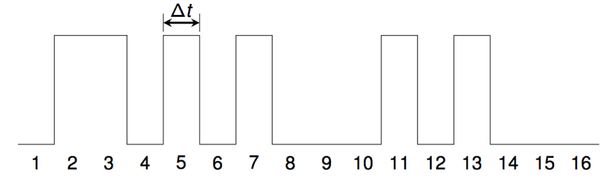

Undergraduate Research
For 3 years I mentored the Number Theory and Noise project at the WXML, together with Professor Matt
Conroy. In this project we turn positive integer sequence (e.g., the primes) into sounds where the first million integers can be heard in 30 seconds! We have generated many sounds over the year, as well as uploaded many new sequences to the
OEIS. Here is a description of how we turn a positive integer sequence into a sound. In a nutshell, we approximate a waveform with peaks for integers
in the sequence, and valleys for integers which are not:

If you would like to get involved, email Dr. Conroy, and apply via the WXML page!